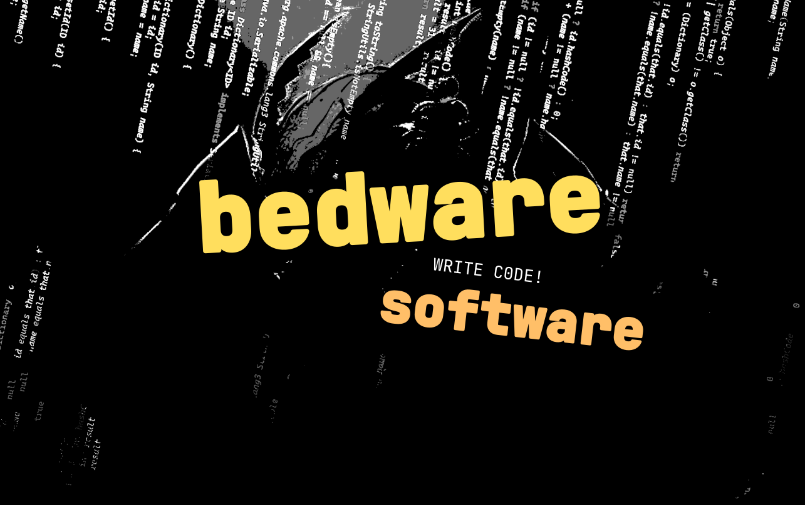
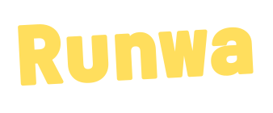
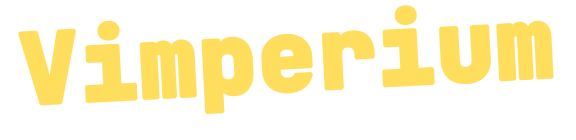
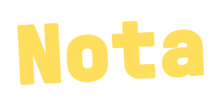
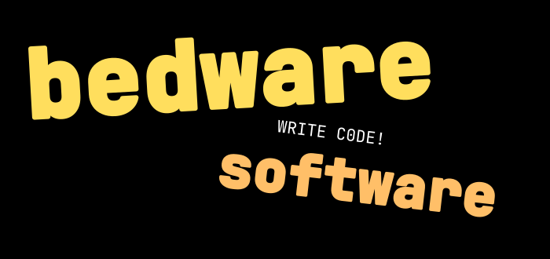
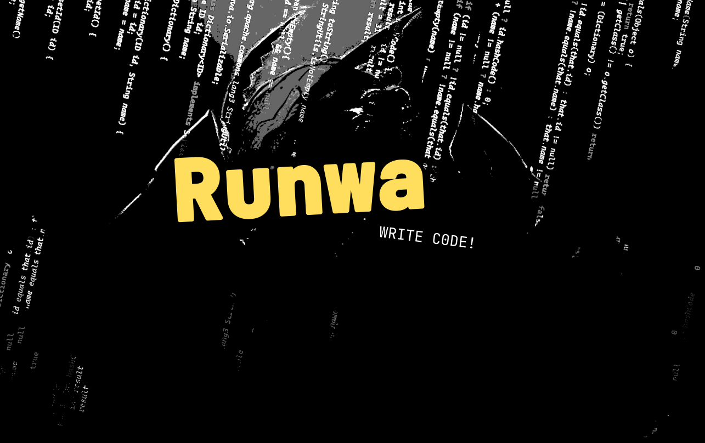
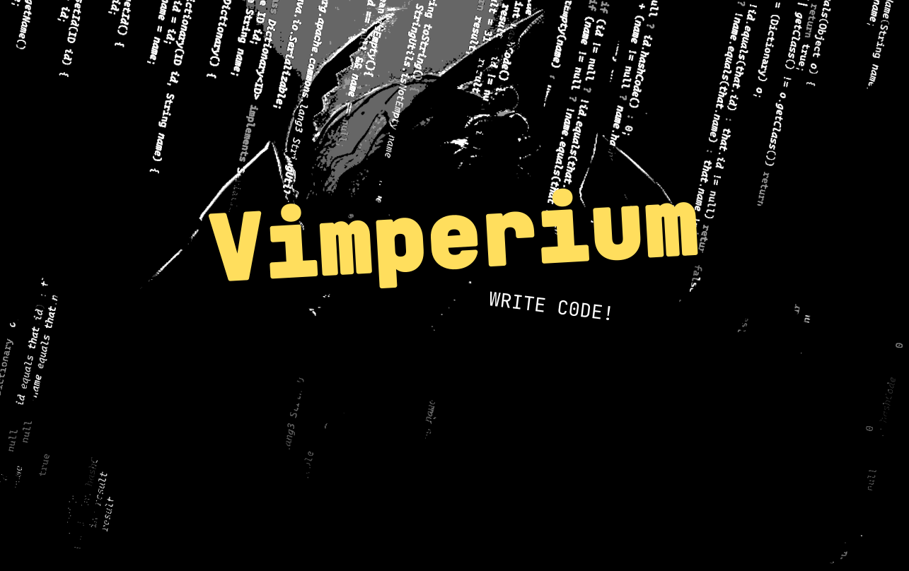

Итог: бренд bedware в чистовом виде
Здесь уже ничего не нужно выбирать. Всё на странице собрано из одного файла tokens/tokens.json и ваших решений: направление C, подписи Inter в обычном регистре, кнопка приподнимается при наведении, выключенное — штриховкой, жёлтое кольцо фокуса, поле со срезом, панели и меню со скруглением 8px.
Логотип
JetBrains Mono ExtraBold в контурах, обводка 5% кегля со скруглёнными стыками, разрядка 2%, наклон −3° и +6.5°. Файлы SVG в brand/logo/, собираются командой npm run logo.







Компоненты
Живые: наводите, нажимайте, ходите Tab. Код — components/components.css.
Тема включается атрибутом data-theme на любом предке.
Кнопки
Поле: 32 / 36 / 40 и выключенное
Токены
Читаются прямо из tokens/tokens.json. Образец разделён по диагонали: слева вверху тёмная тема, справа внизу светлая.
Цвета
Размеры, отступы, скругления, движение
Текстовые стили
Что где лежит
Источник истины
tokens/tokens.json — правится только он.npm run tokens → tokens/tokens.css (переменные --bw-*) и tokens/tailwind-theme.css — те же значения под именами, которые уже есть в globals.css Runwa и Vimperium (--color-primary, --color-card…). Перекраска приложения = подставить этот блок.
Остальное
brand/logo/*.svg — логотип и названия продуктов.components/components.css — эталон кнопки, поля, панели, метки, переключателя, меню.DECISIONS.md — все ваши решения.index.html, c.html — страницы выбора (история).